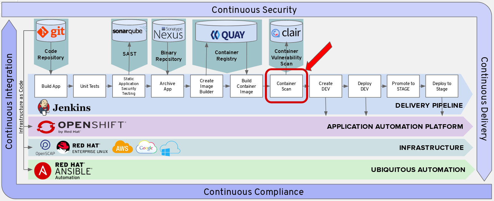
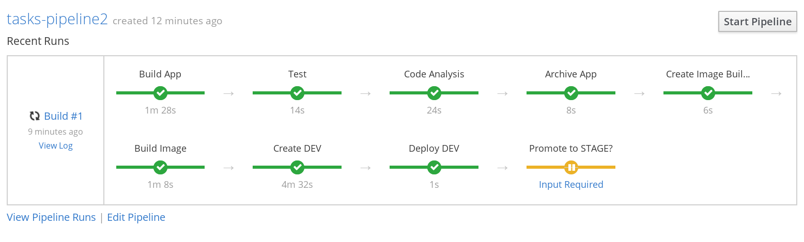
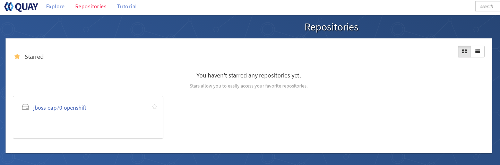
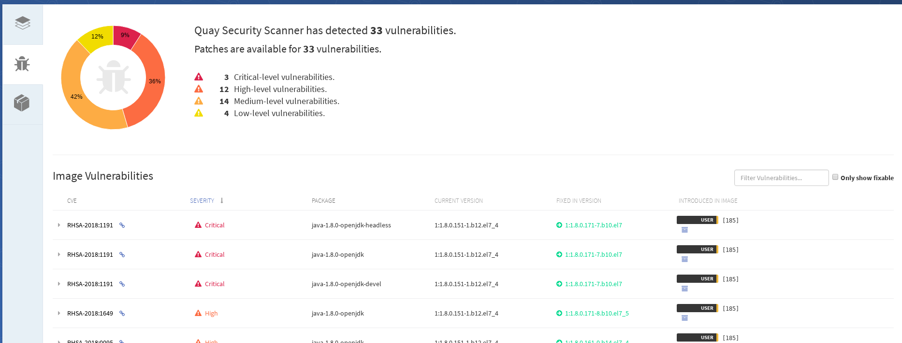

Add Clair Container Scan
Add the configuration for the Container Scan below to your pipeline text file.

Append to Jenkins Pipeline Configuration
In Builds > Pipelines > tasks-pipeline > Actions > Edit

In your pipeline, replace the Jenkins agent 'maven' with 'jenkins-slave-image-mgmt'.
pipeline {
agent {
label 'jenkins-slave-image-mgmt'
}
In your pipeline, add the Container Scan Stage after the Build Container Stage and before the Create Dev Stage.
Please replace the following values:
- <oc user> : this was given to you by the instructor
- <oc password> : this was given to you by the instructor
- <oc environment> : this was given to you by the instructor
- <quay user> : created from a previous lab
- <quay password> : created from a previous lab
- <docker repository> : In another tab with the OpenShift Console, go to Builds > Images. Find the Docker Repo link for "jboss-eap70-openshift". It should be value similar to "172.30.186.87:5000/cicd-user1/jboss-eap70-openshift"
- <quay> : this was given to you by the instructor
- <quay user again> : same user as <quay user>
- <quay repository> : created from the previous lab, i.e. jboss-eap70-openshift
stage('Clair Container Scan') {
steps {
sh "oc login -u <oc user> -p '<oc password>' --insecure-skip-tls-verify <oc environment> 2>&1"
sh 'echo "$(oc whoami):$(oc whoami -t)" > /tmp/srccreds'
sh 'skopeo --debug copy --src-creds="$(cat /tmp/srccreds)" --src-tls-verify=false --dest-tls-verify=false --dest-creds=<quay user>:<quay password> docker://<docker repo>:1.5 docker://<quay>/<quay user again>/<quay repository>:1.5'
}
}
For an example, see the following:
stage('Clair Container Scan') {
steps {
sh "oc login -u user1 -p 'redhat!@#' --insecure-skip-tls-verify https://master.ocp-naps.redhatgov.io:8443 2>&1"
sh 'echo "$(oc whoami):$(oc whoami -t)" > /tmp/srccreds'
sh 'skopeo --debug copy --src-creds="$(cat /tmp/srccreds)" --src-tls-verify=false --dest-tls-verify=false --dest-creds=user3:redhat123 docker://docker-registry.default.svc:5000/cicd-user1/jboss-eap70-openshift:1.5 docker://quay-enterprise-quay-enterprise.apps.ocp-naps.redhatgov.io/user1/jboss-eap70-openshift:1.5'
}
}
Save your Jenkins file
Run Pipeline
Go to Builds > Pipeline
Click Start Pipeline for the pipeline you just created called tasks-pipeline.
Your pipeline should now execute through all the stages you created.
Go ahead and click View Log. This will take you to the Jenkins logs and you can follow the various stages in your pipeline.
When it asks to promote to stage, go ahead and promote it.

View Clair Container Scan Report in Quay
Select your Repository you created from the previous lab

Select Repository Tags on the left hand menu
- If your scan is queued, you will need to wait for the scan to finish to view the report
Select the Security Scan for your Image

View the Security Scan Report
